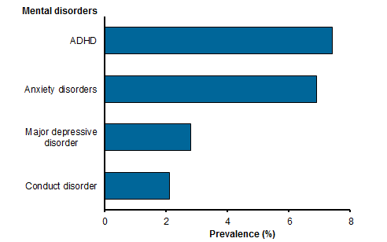
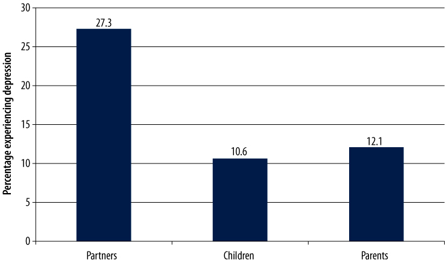

Compared to the past, mental health is currently at an all-time high in Australia. 25% of all Australians are affected by mental health issues - which is significantly more than ever before. Young women are more likely to be affected by mental illness, compared to their male counterpart. Furthermore, mental illness doesn’t just affect the people that harbour such illnesses; but also, the Australian economy gets affected too.

ADHD is the most common type of mental illness, followed by anxiety, depression and "conduct disorder".
Conduct disorder is where the person acts antisocially in public, and performs odd actions.
One interesting statistic is that children from primarily English speaking households are at 4x the risk to have ADHD.
This may be because of the brain stimulation that speaking another language provides, which also acts as a barrier against
other mental illnesses such as schizophrenia.

Partners are most affected by mental health issues. This is followed by groups of people such as children and parents.
With divorce rates being higher than ever, one can assume that the rate of mental illness, especially ones such as
depression or anxiety may occur when the two people divorce. Also, with most youth finding "school or study problems" as one of
their issues of concern, and with school being much more competitve, children can be subject to mental illnesses.
Finally, parents - especially the seniors, are prone to mental illness due to the loss of fulfilment that a job provides.
Furthermore, a loss of a partner also may lead to mental illness.